Today

A returning student knows what to do next, why it is here and when they can stop.
Plans
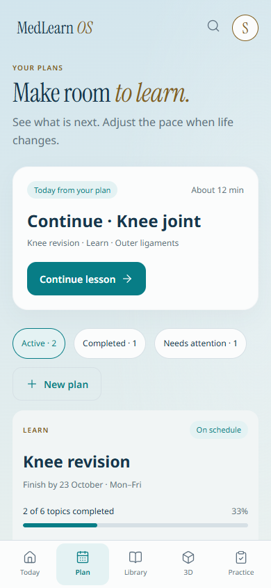
A student sees which plan needs attention and reaches the actual scheduled activity.
Plan calendar

The calendar makes a realistic promise and offers recovery when that promise no longer fits.
New plan
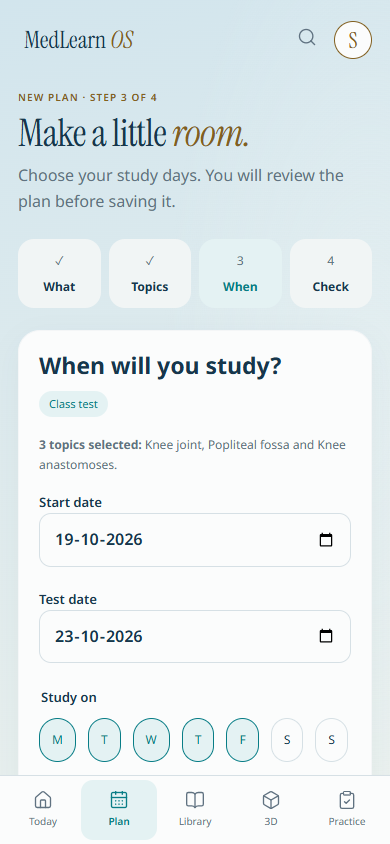
A student sets a realistic schedule without losing their place or earlier choices in the existing four-step wizard.
AI plan proposal
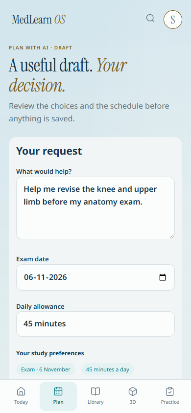
AI offers an inspectable draft whose saved schedule matches the student’s actual preferences.
Library
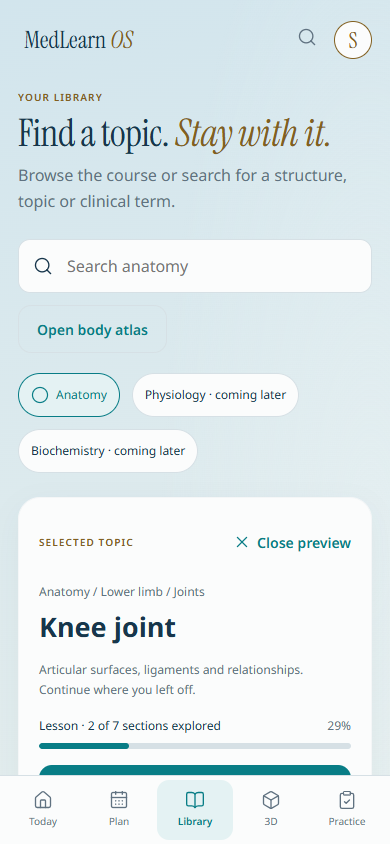
A student can scan familiar topic names, preview one and start the appropriate study activity.
Search
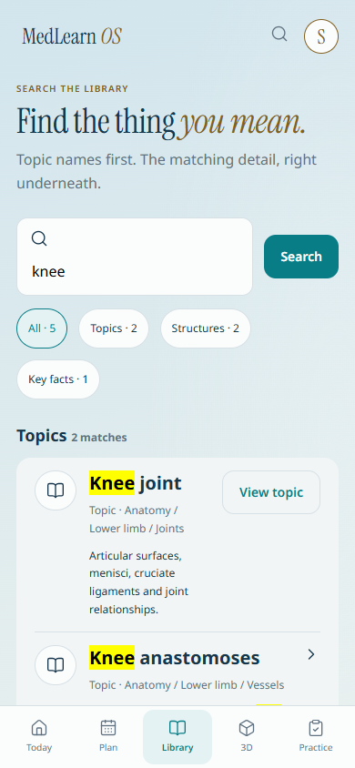
Results identify the thing being found before asking the student to read its explanation.
Topic overview

Know the next useful study action before choosing extra resources.
Lesson
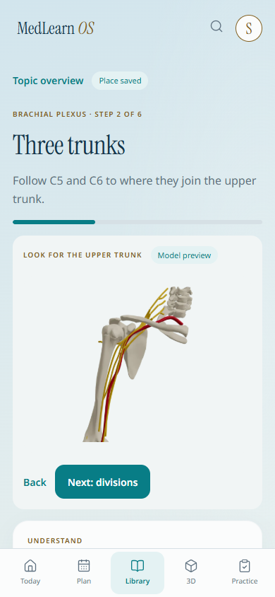
Compare a small explanation with its visual, then continue without losing your place.
3D Studio
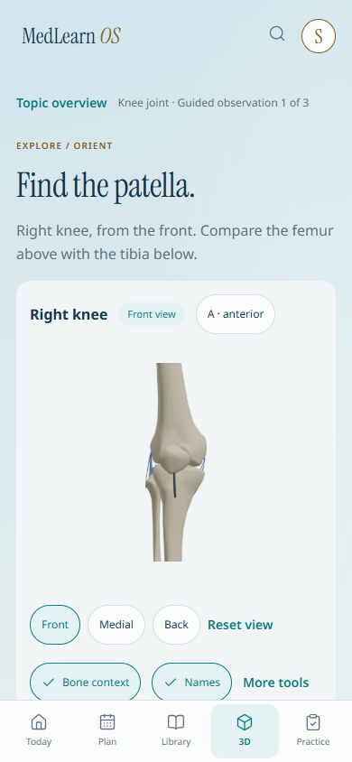
Use the model to answer one observation, with orientation and controls always clear.
Exam diagram trainer
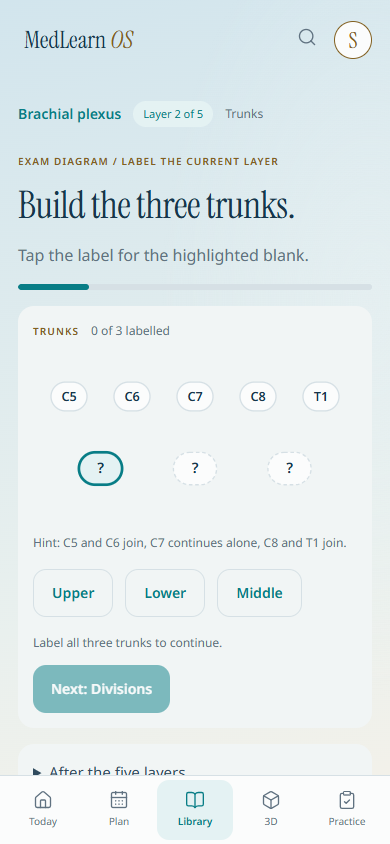
Build the existing diagram by placing labels one layer at a time, then draw it on paper from memory.
Practice question
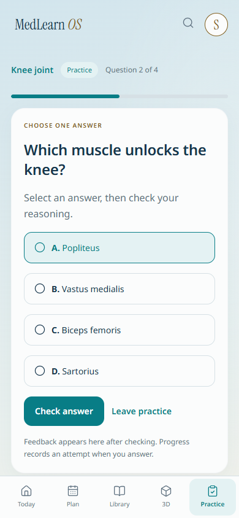
Read one question, commit to an answer, then inspect feedback without losing context.
Recall
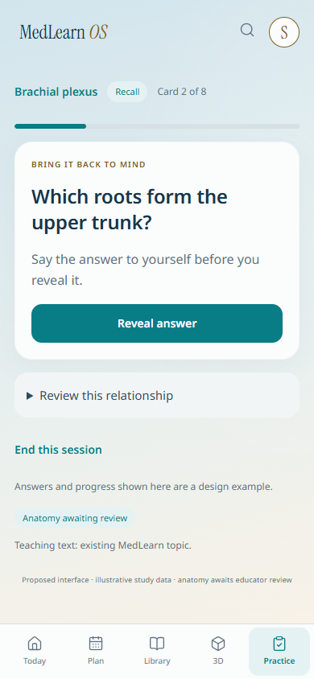
Keep the recall prompt, reveal action and honest self-rating together on the smallest screen.
Knee recognition sample

Compare the marked structure and both possible answers in the same compact study view.
Welcome to MedLearn
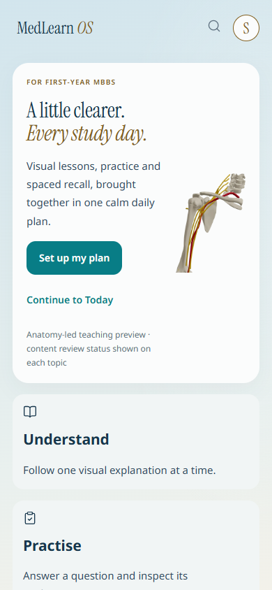
Understand the study loop and enter the app without a long promotional scroll.
Set up your plan
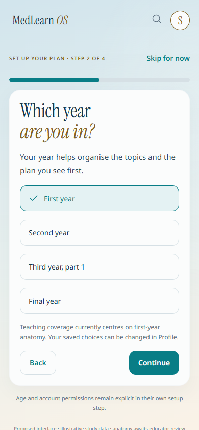
Make four understandable choices and reach a useful first study task.
Your books
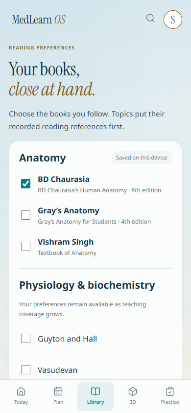
Choose familiar books once, then get relevant reading references in each topic.
Your profile
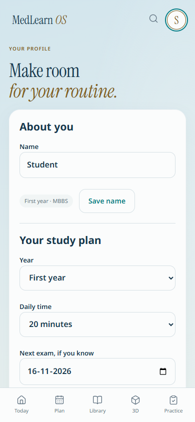
Adjust study preferences without navigating through a second dashboard.
Your account
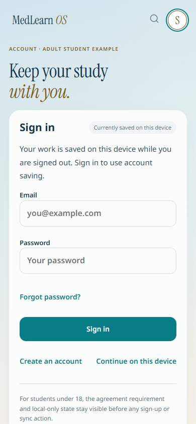
Understand saving, permissions and sign-in without promotional distractions.
Offline recovery
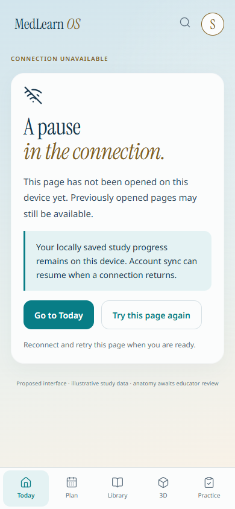
Explain what can still be used and offer one safe next step.
Content review
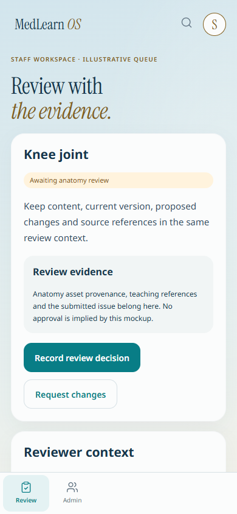
Help reviewers find a topic, understand the pending change and record an explicit decision.
Review administration
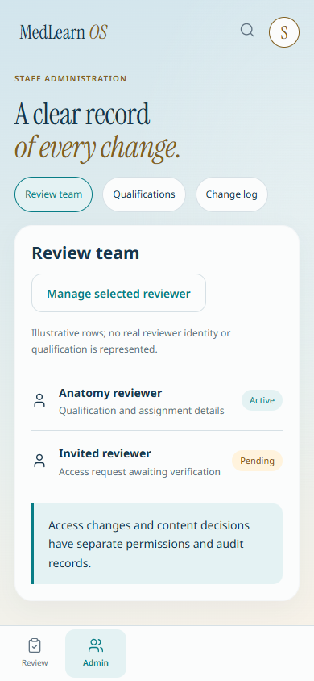
Manage review-team access and trace decisions with a compact utility layout.
Facilitator setup
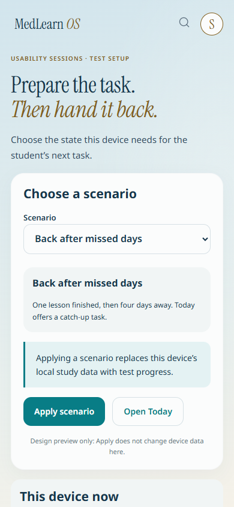
Set up a usability scenario with a clear preview of the data it replaces on this device.